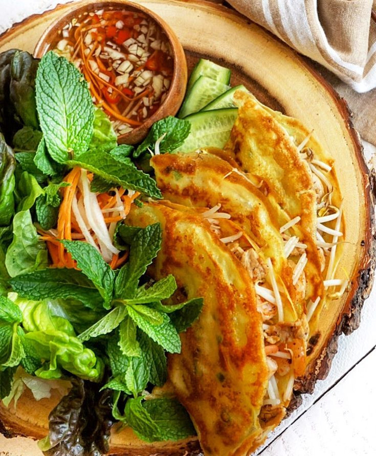
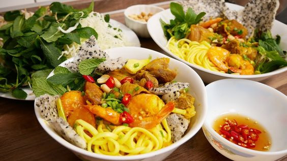
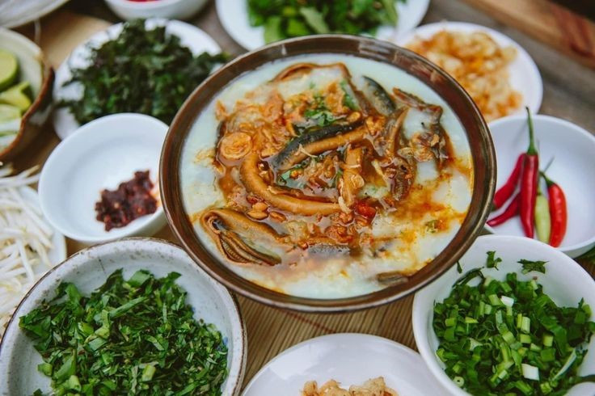

Bình Định: Bánh xèo tôm nhảy
Ẩm thực Bình Định vốn nổi tiếng bởi sự kết hợp hài hòa giữa nhiều loại nguyên liệu mộc mạc mà tươi ngon, mà trong đó, bánh xèo tôm nhảy là một món ngon điển hình níu chân thực khách. Bánh xèo tôm nhảy Bình Định thực sự là một món ăn đặc trưng thể hiện sự giao hòa của ẩm thực ba miền Bắc, Trung và Nam. Với vỏ bánh xèo mềm dai, một đặc trưng của ẩm thực duyên hải Nam Trung Bộ, và đĩa rau ăn kèm gồm rau thơm, giá tươi, rau cải và cải mầm, cùng vị chua ngọt của xoài xanh thái lát, món Bánh xèo tôm nhảy mang đến sự phong phú và hài hòa trong cảm nhận về hương vị.
Quảng Nam: Mì Quảng
Mì Quảng, từng sợi mì hòa quyện trong từng hạt gạo, thể hiện tinh hoa ẩm thực của Đà Nẵng và Quảng Nam, trở thành biểu tượng không thể thiếu trong danh sách đặc sản Việt Nam. Sợi mì mềm mịn, tự hào là thành quả của bột gạo dai ngọt, được tẩm ướp trong nước dùng hương thơm từ xương heo nấu chảy. Đặc biệt, hương vị của mì Quảng được tô điểm bởi những nguyên liệu phong phú như thịt heo, thịt gà, cá lóc, ếch, trứng cút luộc... Từng miếng thịt thơm béo kết hợp với nước dùng tinh túy, tạo nên một sự kết hợp tuyệt vời trên đĩa mì.
Nghệ An: Cháo lươn
Cháo lươn Nghệ An là món đặc sản “nức tiếng” của vùng quê Bác. Một bát cháo lươn nóng hổi được mang ra, trên đó được rắc thêm ít hành lá tươi thơm. Thêm vào đó là một phần thịt lươn vàng ươm trộn đều với cháo, tạo nên một hương vị hấp dẫn. Khi bạn thưởng thức, hơi nước bốc lên từ bát cháo, mang theo hương thơm ngọt, cay nồng, làm say đắm lòng người và khiến ai cũng phải "gật gù khen ngon".